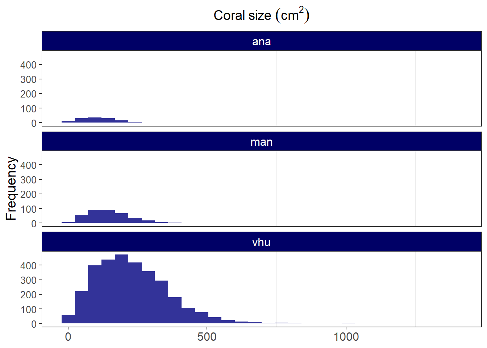
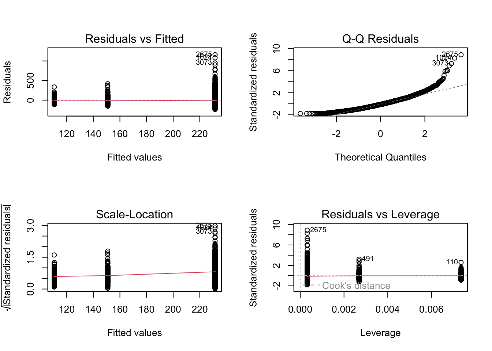
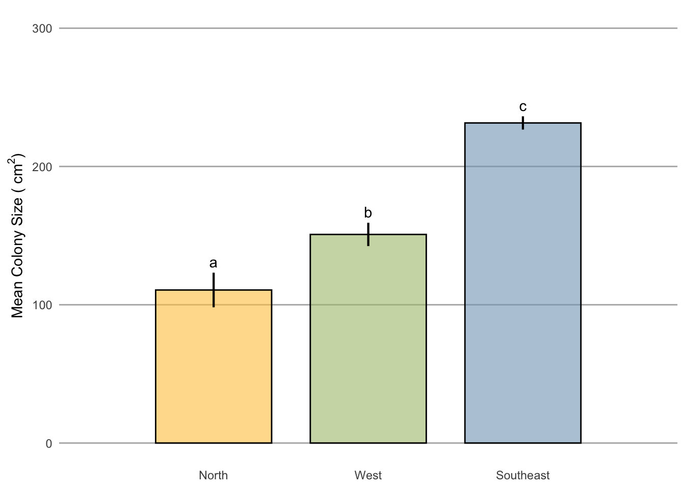

poci_size <- read.csv('coral_size.csv')Coral Size
poci_size.gg <- read_csv("poci_size_main.csv")Rows: 3639 Columns: 10
── Column specification ────────────────────────────────────────────────────────
Delimiter: ","
chr (3): level, Site, cover
dbl (7): layer, class, id, area, enn, para, size_cm
ℹ Use `spec()` to retrieve the full column specification for this data.
ℹ Specify the column types or set `show_col_types = FALSE` to quiet this message.ggplot(poci_size.gg, aes(x = size_cm)) +
geom_histogram(fill = "#333399") +
#below here is ylabel, xlabel, and main title
ylab("Frequency") +
xlab(NULL) +
ggtitle(expression("Coral size " (cm**2))) +
theme_bw() +
facet_wrap(~ Site, ncol = 1) +
#theme sets sizes, text, etc
theme(axis.title.x = element_text(size = 14),
axis.title.y = element_text(size = 14),
axis.text.y = element_text(size= 10),
axis.text.x = element_text(size = 12),
legend.text = element_text(size = 12),
legend.title = element_text(size = 12),
plot.title = element_text(hjust = 0.5, size = 14),
# change plot background, grid lines, etc (just examples so you can see)
panel.background = element_rect(fill = "white"),
panel.grid.minor.y = element_blank(),
panel.grid.major = element_blank(),
plot.background = element_rect(fill = "white"),
legend.background = element_rect(fill = "white"),
strip.text.x = element_text(size = 12, colour = "#FFFFFF"),
strip.background = element_rect(fill = '#000066')
)`stat_bin()` using `bins = 30`. Pick better value with `binwidth`.
poci_size2 <-
poci_size %>%
as_tibble() %>%
mutate(size_cm = area*10000) %>%
group_by(Site) %>%
dplyr::summarize(mean = mean(size_cm),
sd = sd(size_cm),
n = n(),
se = sd/sqrt(n)
) %>%
mutate(se = sd / sqrt(n),
lower.ci = mean - qt(1 - (0.05 / 2), n - 1) * se,
upper.ci = mean + qt(1 - (0.05 / 2), n - 1) * se) %>%
mutate_at(vars(Site), factor) %>%
add_column(
location = c('Anakena', 'Manavai', 'Southeast')
) %>%
mutate_at(vars(location), factor)poci_size2# A tibble: 3 × 8
Site mean sd n se lower.ci upper.ci location
<fct> <dbl> <dbl> <int> <dbl> <dbl> <dbl> <fct>
1 ana 111. 73.8 136 6.33 98.2 123. Anakena
2 man 151. 82.7 372 4.29 142. 159. Manavai
3 vhu 231. 137. 3131 2.44 227. 236. Southeastpoci_size.gg <-
poci_size %>%
mutate(size_cm = area*10000) %>%
as_tibble() %>%
mutate_at(vars(Site), factor)poci_size.gg# A tibble: 3,639 × 10
layer level class id Site cover area enn para size_cm
<int> <chr> <int> <int> <fct> <chr> <dbl> <dbl> <dbl> <dbl>
1 1 patch 1 2 ana coral 0.0165 0.111 42.0 165.
2 1 patch 1 3 ana coral 0.0261 0.111 32.1 261.
3 1 patch 1 4 ana coral 0.0162 0.0598 44.3 162.
4 1 patch 1 5 ana coral 0.0149 0.230 38.6 149.
5 1 patch 1 6 ana coral 0.00788 0.535 61.5 78.8
6 1 patch 1 7 ana coral 0.0148 0.532 41.1 148.
7 1 patch 1 8 ana coral 0.0109 0.0598 50.6 109.
8 1 patch 1 9 ana coral 0.0101 0.346 52.6 101.
9 1 patch 1 10 ana coral 0.0262 0.192 38.4 262.
10 1 patch 1 11 ana coral 0.00620 0.137 71.6 62.0
# ℹ 3,629 more rowsmodel_1.lm <- lm(size_cm ~ Site, data = poci_size.gg)model_1.lm
Call:
lm(formula = size_cm ~ Site, data = poci_size.gg)
Coefficients:
(Intercept) Siteman Sitevhu
110.67 40.18 120.81 summary(model_1.lm)
Call:
lm(formula = size_cm ~ Site, data = poci_size.gg)
Residuals:
Min 1Q Median 3Q Max
-231.46 -91.09 -16.44 70.33 1160.47
Coefficients:
Estimate Std. Error t value Pr(>|t|)
(Intercept) 110.67 11.18 9.896 < 2e-16 ***
Siteman 40.18 13.07 3.074 0.00212 **
Sitevhu 120.81 11.42 10.575 < 2e-16 ***
---
Signif. codes: 0 '***' 0.001 '**' 0.01 '*' 0.05 '.' 0.1 ' ' 1
Residual standard error: 130.4 on 3636 degrees of freedom
Multiple R-squared: 0.05804, Adjusted R-squared: 0.05752
F-statistic: 112 on 2 and 3636 DF, p-value: < 2.2e-16par(mfrow = c(2, 2))
plot(model_1.lm)
Anova(model_1.lm, type = "III")Anova Table (Type III tests)
Response: size_cm
Sum Sq Df F value Pr(>F)
(Intercept) 1665764 1 97.933 < 2.2e-16 ***
Site 3810826 2 112.022 < 2.2e-16 ***
Residuals 61845547 3636
---
Signif. codes: 0 '***' 0.001 '**' 0.01 '*' 0.05 '.' 0.1 ' ' 1confint(model_1.lm) 2.5 % 97.5 %
(Intercept) 88.74557 132.5982
Siteman 14.55638 65.8019
Sitevhu 98.40842 143.203389+14[1] 10389+98[1] 187132+66[1] 198132+143[1] 275aggregate(size_cm ~ Site, data = poci_size.gg, mean) Site size_cm
1 ana 110.6719
2 man 150.8510
3 vhu 231.4777model_1.aov <- Anova(model_1.lm, type = "III")as.data.frame(model_1.aov) Sum Sq Df F value Pr(>F)
(Intercept) 1665764 1 97.93297 8.382392e-23
Site 3810826 2 112.02231 6.156818e-48
Residuals 61845547 3636 NA NAflextable(model_1.aov)Sum Sq | Df | F value | Pr(>F) |
|---|---|---|---|
1,665,764 | 1 | 97.93297 | 0.000000000000000000000083823920976919888390690403966670 |
3,810,826 | 2 | 112.02231 | 0.000000000000000000000000000000000000000000000006156818 |
61,845,547 | 3,636 |
post_hoc.model_1.lm <- glht(model_1.lm, linfct = mcp(Site = 'Tukey'))model_1.aov <- aov(size_cm ~ Site, data = poci_size.gg)# Tukey's test
tukey <- TukeyHSD(model_1.aov)# compact letter display
cld <- multcompLetters4(model_1.aov, tukey)cld$Site
vhu man ana
"a" "b" "c" poci_size3 <-
poci_size2 %>%
add_column(
cld = c('a', 'b', 'c')
) %>%
mutate_at(vars(cld), factor)poci_size3# A tibble: 3 × 9
Site mean sd n se lower.ci upper.ci location cld
<fct> <dbl> <dbl> <int> <dbl> <dbl> <dbl> <fct> <fct>
1 ana 111. 73.8 136 6.33 98.2 123. Anakena a
2 man 151. 82.7 372 4.29 142. 159. Manavai b
3 vhu 231. 137. 3131 2.44 227. 236. Southeast c x_labels = c("North", "West", "Southeast")
# label_names = c("8 m" = "8 m", "15 m" = "15 m", "25 m" = "25 m")poci_size.gg.barplot <- ggplot(poci_size3, aes(x = location, y = mean, fill = x_labels)) +
geom_bar(stat = "identity", width = 0.75, color = "black", size = 0.50, alpha = 0.6) +
geom_linerange(aes(ymin = lower.ci, ymax = upper.ci), size = 0.75) +
scale_y_continuous(expression(paste("Mean Colony Size ("," ", cm^2, ")")), limits = c(0, 300)) +
scale_x_discrete(expand = c(0, 1), labels = x_labels) +
scale_fill_manual(values = c("#FFC74E", "#82A5C0", "#ABC178")) +
# facet_wrap( ~ depth2, labeller = as_labeller(label_names), dir = "v", ncol = 1) +
# ggtitle(expression(paste(italic(" Pocillopora "), "spp."))) +
geom_text(aes(label = cld, y = upper.ci), vjust = -0.5) +
#scale_y_log10(expression(paste("Colony Size (", cm^2, ")"), limits = c(0, 100000))) +
labs(x = NULL) +
theme(strip.text = element_text(size = 10, color = "black", hjust = 0.50),
strip.background = element_rect(fill = "#FFFFFF", color = NA),
panel.background = element_rect(fill = "#FFFFFF", color = NA),
panel.grid.major.x = element_blank(),
panel.grid.minor.x = element_blank(),
panel.grid.minor.y = element_blank(),
panel.grid.major.y = element_line(color = "#b2b2b2"),
panel.spacing.x = unit(1, "cm"),
panel.spacing.y = unit(0.5, "cm"),
panel.spacing = unit(1, "lines"),
axis.ticks = element_blank(),
legend.position = "none",
plot.title = element_text(size = 11),
axis.title.y = element_text(size = 11),
legend.title = element_blank())Warning: Using `size` aesthetic for lines was deprecated in ggplot2 3.4.0.
ℹ Please use `linewidth` instead.poci_size.gg.barplot